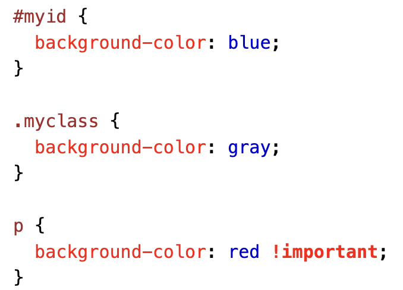
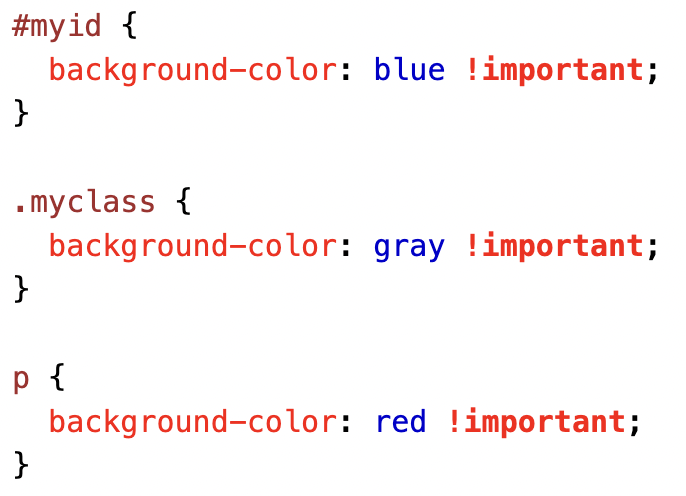
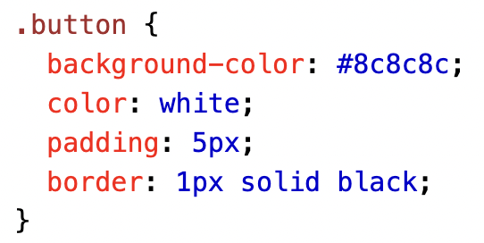

CSS selectors
and specificity

Specificity is the means by which browsers decide which CSS property values are the most relevant to an element and, therefore, will be applied. Specificity is based on the matching rules which are composed of different sorts of CSS selectors.

The following list of selector types increases by specificity:
-
Type selectors
(e.g.,
h1) and pseudo-elements (e.g.,::before). -
Class selectors
(e.g.,
.example), attributes selectors (e.g.,[type="radio"]) and pseudo-classes (e.g.,:hover). -
ID selectors(e.g.,
#example).
Universal selector (*), combinators (+, >, ~, ' ', ||) and negation pseudo-class (:not()) have no effect on
specificity. (The selectors declared inside :not() do,
however.)
If there are multiple selectors that target a specific element,
the most specific one will always take preference.
| Selector | Symbol(s) | Usage |
|---|---|---|
| Universal Selector | * {} | Matches elements of any type. Useful if you want elements of your webpage to have overarching styles at low specificity to be overwritten by more specific selectors. |
| Type Selectors | h1, p, section, etc. | Selects all elements of a given type throught the document. This will be commonly used to style larger chunks of the same type at face value. |
| Class Selectors | .example {} | Selects elements based on their Class attribute. This is denoted by a 'class=""' in the opening tag of the HTML element. As class elements can be used more than once, it is useful for styling elements that you wish to have the same semantic purpose. |
| ID Selectors | #example {} | Selects elements based on their id attribute. This is denoted by a 'id=""' in the opening tag of the HTML element. This selectors practical difference from the class selector is that a specific id selector can only be used once. These selectors are the most specific of those that are commonly used, and thus will be often used to style individual elements on your webpage. |
| !important | !important | Although not specifically a selector, this rule performs a comparable function in that it overrides any other style declarations present on a given element. This should almost never be used as it is makes debugging significantly more difficult. |
Some rules of thumb:
-
Always look for a way to use specificity before even
considering
!important -
Only use
!importanton page-specific CSS that overrides foreign CSS (from external libraries, like Bootstrap or normalize.css). -
Never use
!importantwhen you're writing a plugin/mashup. - Never use
!importanton site-wide CSS.

-
What is !important?
The !important rule in CSS is used to add more importance to a property/value than normal. In fact, if you use the !important rule, it will override ALL previous styling rules for that specific property on that element!
 -
Important About !important
The only way to override an !important rule is to include another !important rule on a declaration with the same (or higher) specificity in the source code - and here the problem starts! This makes the CSS code confusing and the debugging will be hard, especially if you have a large style sheet!
 -
Maybe One or Two Fair Uses of !important
One way to use !important is if you have to override a style that cannot be overridden in any other way. This could be if you are working on a Content Management System (CMS) and cannot edit the CSS code. Then you can set some custom styles to override some of the CMS styles.
